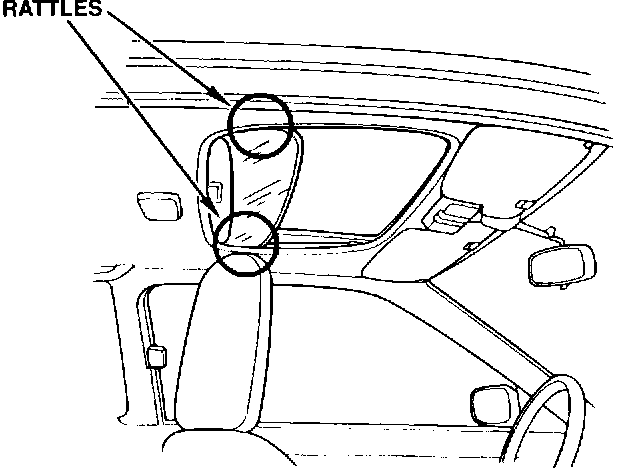
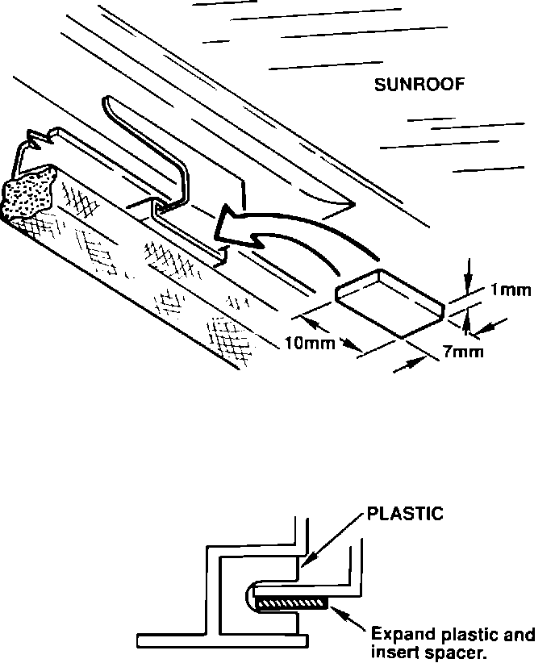

Sunroof

Sunroof Rattles
Symptom: Rattling from a half opened sunshade when driving over rough roads.
Source: Friction between the sunshade guide rail and the slide arm.

Corrective Action: Make a spacer of EPT Sealer (P/N 06990-SA5-00) in the dimensions shown. Press it between the sunshade slide arm and cover.
WARRANTY CLAIM INFORMATION
Operation number: 814177
Flat rate time: 0.6 hours
Failed P/N: 83210-SK7-A00ZA
3DR-83210-SK7-A00ZB
Defect code: 042
Contention code: B07